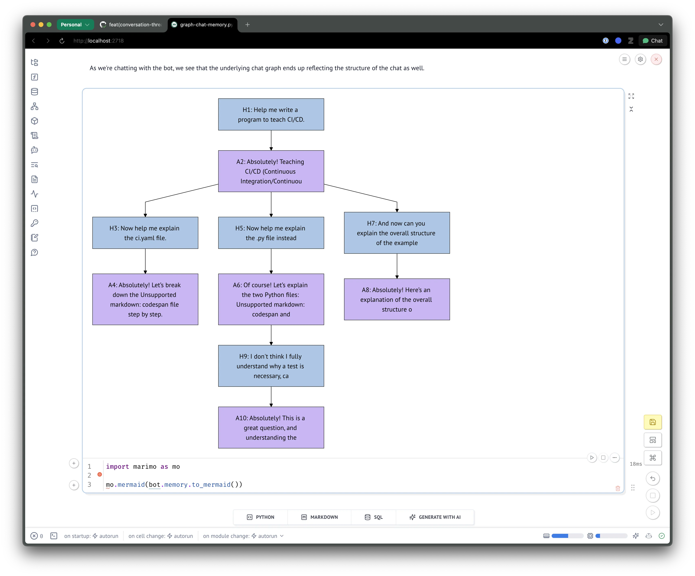

Eric J Ma's Website
written by Eric J. Ma on 2025-07-21 | tags: automation ai memory design coding testing architecture prototyping review pairing
In this blog post, I share how months of hands-on struggle and learning paved the way for me to ship a complex graph-based memory feature for Llamabot in just two days—with AI as my design partner. I explain why you have to "earn your automation" and how AI can amplify, not replace, your critical thinking. Curious how pairing deep preparation with AI can supercharge your workflow and lead to breakthroughs?
What if I told you I shipped a complex feature rewrite in just two days using AI as a design partner?
Before you roll your eyes at another "AI did everything for me" story, here's the catch: those two days were only possible because I spent months doing the hard work of earning that automation. Fresh off being thoroughly nerd-sniped by Joe Cheng (Posit PBC's CTO) at SciPy 2025, I found myself on a plane with a mission: finally implement robust graph-based memory for my Llamabot project.
What happened next taught me everything about the difference between delegating thinking to AI versus using AI to amplify your thinking. The key insight? You have to earn your automation first.
First, I had to struggle (and that was the point)
The timeline is crucial to understanding why this approach worked. For four months, I'd been mulling over how graph-based memory for LLM applications could work. Then Joe read my Llamabot code (which at the time didn't have graph-based memory), we chatted, and I got completely nerd-sniped. Over the next few days, I decided I had to make graph memory happen, so I finally built a working prototype during my week in Seattle for work. (All on my personal laptop, keeping work and personal projects separate.)
What made this experience transformative was having Joe look at my code. Here was someone I'd never met taking such a thorough look at my design choices - I was deeply impressed by how careful and thoughtful he was. That validation convinced me: it was time to do this right.
But here's what mattered most: my prototype was fragile. Things were very intertwined with one another. Because everything was so coupled, I was naturally feeling the difficulty in making any changes. This hands-on struggle was teaching me exactly what needed to be separated and how to think about the architecture.
This struggle wasn't wasted time - it was earning my automation.
Why struggling first was essential
This connects directly to an earlier blog post I wrote about earning your automation. I wouldn't have been able to critique AI the way I did if I hadn't first developed taste through hands-on struggle.
That initial prototype work - building something fragile but functional by hand - gave me the judgment needed to meaningfully critique AI's suggestions. Without that foundation, I would have been delegating critical thinking to AI instead of using it as a thinking partner.
The prototype taught me what worked, what didn't, and most importantly, what the real problems were that needed solving. When AI later proposed architectural changes, I could evaluate them against my lived experience of the pain points.
This preparation set the stage for what happened next on that plane ride home.
Then I unleashed AI as a design partner
At SEA-TAC airport with three hours until boarding, I decided this was it. Time to compress all my implementation work into a focused sprint. But instead of jumping straight into coding, I started with what felt like a radical approach: a pure design phase.
(Now, to be clear, it's not exactly radical - lots of people have said you should write requirements first. But most vibe coders don't actually follow this practice.)
I asked AI to critique my existing prototype and propose a new architecture. What followed was intense iteration on a design document right there in the airport. I did try to continue on the plane, but JetBlue's spotty Wi-Fi made that unproductive. Most of the design thinking and iteration happened during those airport hours - no code written yet, just pure design thinking.
AI proposed an interface with chat memory at the high level, with separate graph memory and list memory structures underneath. It included a visualization module (originally tailored for graphs) and a node selector module for intelligent node selection. The design doc grew to at least 400-500 lines of markdown.
The beauty of this approach? I could look at the prospective code in markdown blocks and play through scenarios in my head. How would someone use this API? How would the internals work? By asking very specific "how" questions, I could probe deeper and make sure I truly understood and agreed with every design choice.
The major breakthrough came when I scrutinized the design and asked: why do we have two chat memory implementations, one for linear memory and one for graph memory?
The natural follow-up hit me: lists are just linear graphs, so why do I need two separate structures? I can just have one that defaults to a linear graph, and then use an LLM for intelligent node selection in the threaded case.
So I generalized everything to use NetworkX graphs underneath, with intelligent node selection for threaded memory. This single insight simplified the entire architecture.
This is exactly what I mean about earning your automation - I could inject my own opinions into the design because I understood the problem space. We were iterating on a design doc, not just generating code.
The real power: AI as a critical thinking amplifier
Here's where things got really powerful. After creating that 400-500 line design document, I had way too much detail to synthesize mentally. Time to leverage one of AI's core strengths: knowledge retrieval and pattern matching.
I commanded the AI: "Go look for any inconsistencies you can see within the doc. Pick out all inconsistencies and surface them for me."
This is where the magic happened. AI surfaced seven or eight inconsistencies, some I agreed with, others I dismissed as inconsequential. But because I'd just reviewed everything, it was all fresh in my mind - I could make informed decisions about each point.
Then I asked it to check one more time: "Double check for me. Do you see any more inconsistencies?"
Now, I wasn't fully offloading this work to AI. I was still doing synthesis in my head, trying to catch things myself. In fact, I caught an inconsistency the AI missed - sometimes I was using bot.memory and sometimes bot.chat_memory between the documentation and API, while continually refining and reviewing the documentation.
The key insight here is about inversion - one of the core skills of critical thinking. The usual lazy pattern is to just assume things are correct (what I call "vibe coding"). But with AI assistance, we should invert and ask, "What if it's not correct?"
If it's not correct, the logical follow-up becomes: can I get AI to tell me where it's wrong? This combines inversion with one of AI's key strengths - knowledge retrieval. Yes, AI struggles with needle-in-haystack problems, but for big needles in smaller haystacks? It's incredibly powerful.
The "needle" here is: where am I self-contradictory? Where am I discordant? Where is my design not self-coherent? All those assumptions I might have about text-based work can be checked using AI as a tool for critical thinking.
If in doubt, always invert - and now we have a lightning-fast tool for helping us do exactly that.
This principle became the foundation for everything that followed.
Putting the method into practice: tests first, then code
With the design doc solid, it was time for the next phase. I told the AI: "Go write the tests. Write all the tests. Follow the directory structure. Make sure the test structure matches what you're proposing."
I reviewed every single test - lots of code review. But here's what's cool about AI-generated tests: they don't tend to be complicated. They're usually on the simpler side. I don't see parameterized tests using property-based testing like Hypothesis. Instead, I see example-based tests.
As a first pass, example-based tests are perfect - they're concrete, easy to grasp, and I can have confidence that if the test is testing what I think it should test, then it'll pass when the implementation is written.
The test review process was lightning-fast because I was so grounded in what the code was supposed to do. The design doc grounded the tests, the tests would ground the implementation. Each layer validated the next. This is the "earn your automation" principle in action - I could review tests quickly because I understood what the code should do.
When things break (and why that's exactly what you want)
When I finally had AI generate the implementation code and ran the tests, a lot failed - and I was totally okay with that. The first pass had maybe 20+ failing tests, but I figured out an efficient way to iterate through them in batches.
I literally copied and pasted pytest output and got AI to categorize the failures by common patterns. AI is blazing fast at pattern recognition - what would take me ages to figure out was near instantaneous for AI.
Categorizing the failures was key. If I could group them, I could knock out three, four, sometimes even seven failing tests with targeted code changes. Even better, sometimes the failures revealed misunderstandings - either mine about the code or the AI's about the design. This forced clarifying decisions that resolved the discordance between what the test expected versus what the code actually did.
With this approach, I quickly narrowed those 20+ failing tests down to maybe three or four individual syntax errors. Finally, everything worked - all tests passed, discordances resolved, ready to ship.
Remember that inversion principle I mentioned earlier? This is how it played out in practice. Instead of assuming the generated code was correct, I actively looked for where it was wrong and used AI to help categorize and fix the problems systematically.
The payoff: two days from design to deployment
The timeline tells the whole story. I flew on Sunday morning, starting this work while at the airport, and by Monday evening had the pull request done and up to my expectations. The entire implementation phase - from final design doc to merged pull request - took just two days.
But this compressed timeline was only possible because of all the preparation: four months marinating on the idea, one week during the conference to write the prototype and let it simmer while in Seattle and Tacoma, then intense design iteration with AI assistance.
This teaches us something crucial about AI-assisted development: AI doesn't replace thinking and preparation - it amplifies it. I had a crystal-clear goal of what needed shipping after all that prep work. Once I was done with the prototype phase and figuring out the actual problem, bam - two days to ship.
That's incredible. But notice what made this possible: not AI magic, but AI amplifying months of preparation and struggle.
What I actually built (and why it matters)
As someone who has worked with graphs before, in my eyes, the result is beautiful. Conversations are now represented as graphs, and since I work exclusively in Marimo notebooks, I can run and view Mermaid diagrams right inline. With a Mermaid diagram in a Marimo notebook, it's incredibly powerful - I can actually jump around conversation threads using the graph as visual memory to continue probing the AI system in sophisticated ways.

What I love about this implementation is that it's not just a technical achievement - it's become a practical thinking tool. The visual graph helps me navigate complex AI conversations and switch between threads mentally more easily.
And I could only build this effectively because I'd earned the right to automate through that initial prototype struggle.
How this approach scales: the power of AI-assisted pair coding
I have a hypothesis that this approach works even better with two people and an AI assistant - but not more than two, because you can't have too many cooks. At Moderna's Data Science and AI teams, we instituted pair coding early on so we could help each other and share knowledge. Yes, we get less done in the same time, but in the long run, we move much faster. This shared knowledge means I can quickly jump into someone else's codebase.
Pair coding as a practice needs maintenance though - I noticed recently I was getting isolated into solo coding. But during my Seattle trip, I experienced pair coding with AI assistance alongside my colleague Dan Luu from the ML Platform Team. We were learning prompting tips from each other, and it was incredible - we had a chance to share practices for how to use AI to amplify ourselves.
What used to be "here's how you write the function" became sharing how we're actually thinking. We've elevated the level at which we share knowledge. As Dan prompts the AI or I prompt the AI, we're learning how each other thinks in a way that's smooth, fluent, and not bogged down by syntax or implementation details. It operates at a higher plane than mere code.
This is incredibly powerful because we're sharing practices for how to use AI to amplify ourselves, learning prompting techniques from each other in real time.
What used to require teaching syntax and implementation details now becomes sharing thinking patterns and problem-solving approaches. We've elevated the conversation.
The pattern that changes everything
What made this approach work wasn't AI magic - it was a specific sequence that amplified months of preparation into two days of execution.
First, I had to struggle. Building that fragile prototype by hand taught me what the real problems were. Without that lived experience, I couldn't have meaningfully critiqued AI's suggestions or made good design decisions. You can't skip this step.
Then I could partner strategically with AI. Instead of using it as a code generator, I used it as a critical thinking amplifier. The inversion principle became key - actively asking "what's wrong here?" and leveraging AI's pattern recognition to find inconsistencies and categorize problems.
Finally, I followed a systematic progression: design document first, then comprehensive tests, then implementation. When tests inevitably failed, I used AI to categorize failures and fix them in batches rather than one by one.
The two days it took me to ship graph memory weren't about AI being magical. They were about using AI properly after doing the hard work of earning that automation. The months of struggle weren't wasted time - they were the essential foundation that made AI partnership effective.
This is how you go from vibe coding to strategic automation. Not by delegating thinking to AI, but by using AI to amplify the thinking you've already earned the right to do.
Cite this blog post:
@article{
ericmjl-2025-from-nerd-sniped-to-shipped-using-ai-as-a-thinking-tool,
author = {Eric J. Ma},
title = {From nerd-sniped to shipped using AI as a thinking tool},
year = {2025},
month = {07},
day = {21},
howpublished = {\url{https://ericmjl.github.io}},
journal = {Eric J. Ma's Blog},
url = {https://ericmjl.github.io/blog/2025/7/21/from-nerd-sniped-to-shipped-using-ai-as-a-thinking-tool},
}
I send out a newsletter with tips and tools for data scientists. Come check it out at Substack.
If you would like to sponsor the coffee that goes into making my posts, please consider GitHub Sponsors!
Finally, I do free 30-minute GenAI strategy calls for teams that are looking to leverage GenAI for maximum impact. Consider booking a call on Calendly if you're interested!